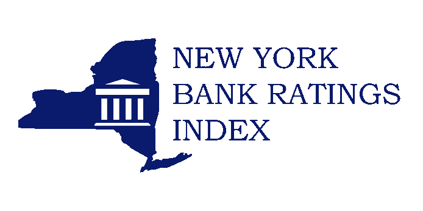
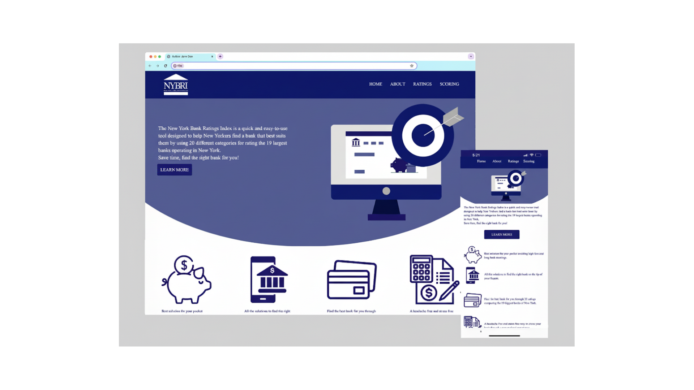

Logo Improvement
Previous logo

New logo implemented

Web Development | UX Design | UX Research | UI Design
Access the website

Choosing a bank should feel like making an informed decision—but for many users, it often feels confusing, overwhelming, and unclear.
This project focused on redesigning a government-based website that helps users identify the best bank for their needs through a rating system. Originally developed as part of a public resource, the platform aimed to provide transparency, but fell short in both usability and accuracy.
As part of a capstone project, the goal was to fix critical functionality issues and to reimagine the user experience.
While the development team addressed underlying JavaScript code issues, my role centered on transforming the platform into something users could actually trust, understand, and navigate with ease.
The original platform had a strong purpose but lacked modernity and intuitive usability.
At its core, the website was meant to simplify decision-making through a rating system. However, a few issues made it unreliable and difficult to use throughout the years, such as outdated ratings, an outdated interface design made the platform feel uninviting and hard to navigate, a confusing information hierarchy made it difficult for users to compare options, and a lack of visual clarity reduced the effectiveness of the rating system
The challenge was not just to improve the interface, but to restore confidence in the system itself.
The solution focused on redesigning the platform from both a functional and experiential perspective.
While the technical team resolved the rating inaccuracies, I approached the problem from a UX standpoint—rethinking how users interact with the platform and how information is presented.
Key improvements included a completely redesigned interface with a modern, clean layout; clearer information hierarchy, making it easier to compare banks; more intuitive rating system visualization, improving readability and trust; simplified navigation to reduce friction and guide users through the process; and cohesive visual identity, including a new logo and custom graphics.
My contribution focused on transforming the platform into a more usable and visually cohesive experience.
Through the redesign, I was able to improve clarity and usability, making the platform easier to navigate; enhance trust by supporting the corrected rating system with clearer visuals, reduce cognitive load through better organization and layout; modernize the overall experience, aligning it with current design standards; and establish a consistent visual identity through branding and graphic design
To better understand user expectations, I considered how individuals approach financial decision-making—especially when choosing a bank.
Users typically look for clear comparisons, transparent information, and a sense of trust and credibility
I developed personas representing a range of users, including first-time bank customers and individuals looking to switch institutions.
Several important insights emerged during the process:
Users are unlikely to rely on a platform if the information appears unclear or inconsistent
Simple, well-structured comparisons are more effective than just data
Outdated or cluttered interfaces can reduce user confidence
The platform should help users reach a decision quickly without overwhelming them
Even accurate data can lose its value if the experience is confusing/difficult to navigate
Previous logo

New logo implemented
This project highlights the importance of evaluating existing systems through a user-centered lens.
Rather than focusing solely on visual redesign, the work demonstrates how identifying usability issues and aligning them with user expectations can lead to meaningful improvements—especially in public-facing platforms.
By addressing clarity, performance, and engagement, the recommendations provide a roadmap for transforming the app into a more effective communication tool for the community.
With further implementation and testing, these improvements have the potential to increase adoption, strengthen community trust, and create a more connected relationship between the department and its users.